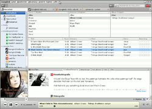
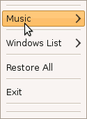

Songbird
Dieser Artikel wurde für die folgenden Ubuntu-Versionen getestet:
Ubuntu 14.04 Trusty Tahr
Zum Verständnis dieses Artikels sind folgende Seiten hilfreich:
Songbird ist Media Player, Medienverwaltung und Browser in einem. Neben der Wiedergabe von lokal gespeicherten Medien bietet das Programm ebenfalls die Möglichkeit, auf Internetseiten hinterlegte Inhalte abzuspielen. Zur Wiedergabe wird das Multimedia-Framework GStreamer verwendet, um eine verbesserte Kompatibilität zu gewährleisten. Außerdem nutzt das Programm XULRunner (wie die Produkte der Mozilla Foundation) sowie eine SQLite-Datenbank.
Basisfunktionen wie Wiedergabelisten, Coveranzeige, Bewertungssystem und das Bearbeiten von ID3-Tags werden ebenso unterstützt wie das Einbinden von Erweiterungen. Diese Add-ons gestatten es, das Programm mit erweiterten Funktionen, wie z. B. Audioscrobbler, YouTube-Videos, Musik-Blogs, Podcasts und Wikipedia, auszurüsten oder auch MP3-Player über Wiedergabelisten synchronisieren zu können. Das Programm unterstützt, abhängig von den installierten Codecs, die Formate MPEG Audio, MPEG Layer 3, MP4 Audio, Ogg Vorbis, Speex, AAC, WMA, FLAC, LPCM, ADPCM und AMR.
Hinweis:
Anfang April 2010 wurde bekannt gegeben, dass man in Zukunft aus Zeitgründen nur noch Versionen für Windows und Mac OS X weiterentwickeln wird. Als Konsequenz wurde die Abspaltung (Fork) Nightingale gegründet. Im Juni 2013 wurde Songbird durch die Entwickler endgültig für beendet erklärt. Manche der in diesem Artikel genannten Erweiterungen stehen daher nicht mehr zur Verfügung, sofern sie nicht bereits in der Basisinstallation enthalten sind.
Installation¶
 Songbird ist nicht in den offiziellen Paketquellen von Ubuntu enthalten. Daher muss man zur Installation auf Fremdquelle ausweichen.
Fremdquelle¶
Auf GetDeb werden Fremdpakete angeboten, aber nicht für alle Ubuntu-Versionen. Nach dem Einbinden und Aktualisieren der Paketquellen kann folgendes Paket installiert [1] werden:
songbird (Getdeb)
 mit apturl
mit apturl
Paketliste zum Kopieren:
sudo apt-get install songbird
sudo aptitude install songbird
Nach der Installation ist das Programm bei Ubuntu-Varianten mit einem Anwendungsmenü unter "Multimedia -> Songbird" zu finden.
Hinweis!
Zusätzliche Fremdquellen können das System gefährden.
Bedienung¶
Nach Bestätigung der Lizenz, Angabe des Pfades, in dem die lokalen Medien liegen und Auswahl von Erweiterungen werden die gewünschten Erweiterungen installiert und die lokale Bibliothek importiert. Je nach System und Datenmenge kann dieser Vorgang eine Weile dauern. Die Funktionen erschließen sich in der Regel von selbst, da alles logisch und übersichtlich zu erreichen ist. Über die rechte Maustaste  können zusätzliche Funktionen des Programms erreicht werden.
können zusätzliche Funktionen des Programms erreicht werden.
Albumcover¶
Die Album-Artwork-Funktion unterstützt Drag & Drop von Bildern, sowie Umschalten zwischen Wiedergabe und aktuell ausgewählten Tracks.
Metadaten¶
Um ID3-Tags zu bearbeiten, führt man einen Rechtsklick auf den oder die ausgewählten Track(s) aus und wählt "Metadaten bearbeiten". Für größere Datenmengen empfiehlt sich die Verwendung von Programmen wie EasyTAG oder Kid3.
Miniplayer¶
Der Miniplayer wird durch "Ansicht-> Mini Player" aktiviert. Über einen Rechtsklick kann über das Menü die Ansicht wieder auf "Main Player" umgestellt werden.
Einstellungen¶
Die Bedienung des Players ist intuitiv und bedarf kaum einer Erklärung. Alle für die Bedienung relevanten Optionen sind über die Leiste am linken Rand erreichbar.
Sprache¶
Über "Datei -> Sprache" bzw. "File -> Language" kann die Spracheinstellung verändert werden. Songbird lädt das entsprechende Sprachpaket herunter, welches nach einem Neustart des Programms zur Verfügung steht.
Suche¶
Wenn viele Titel in Songbird verwaltet werden, kann dies unter Umständen die Suchfunktion extrem verlangsamen. In manchen Fällen stürzt Songbird sogar ganz ab. Hier kann es helfen, den Datenbank-Cache zu erhöhen. Hierzu öffnet man in Songbird einen neuen Tab (STR + T), trägt in die Adressleiste about:config ein und sucht die Stelle songbird.dbengine.cacheSize. Hier ist standardmäßig der Wert 200 eingetragen. Erhöht man diesen Wert auf beispielsweise 5200, verläuft die Suche innerhalb weniger Sekunden.
Skins¶
Um das Aussehen des Players zu ändern, wählt man unter "Ansicht -> Alle Federkleider" das gewünschte Design aus. Um zusätzliche Skins zu nutzen: "Ansicht -> Alle Federkleider -> Weitere herunterladen" anwählen. Es wird die Seite feathers  aufgerufen. Hier kann man das gewünschte Skin durch Anwählen von "Install" auswählen und herunterladen. Die Installation erfolgt wie bei den Erweiterungen.
aufgerufen. Hier kann man das gewünschte Skin durch Anwählen von "Install" auswählen und herunterladen. Die Installation erfolgt wie bei den Erweiterungen.
Erweiterungen¶
Alle Erweiterungen findet man unter "Bearbeiten -> Einstellungen -> Add-Ons". Hier können bereits installierte Plugins konfiguriert oder gelöscht werden. Einige konfigurierbare Erweiterungen wie z. B. SHOUTcast legen eigene Kategorien an. Erweiterungen können per Drag & Drop, mitunter auch direkt über die entsprechende Internetseite, installiert werden. Man erreicht diese schnell über "Extras -> Add-ons... -> Add-Ons -> Get Extensions". Sofern eine Erweiterung inkompatibel ist, wird sie im integrierten Web-Browser entsprechend gekennzeichnet.
Es gibt eine ständig wachsende Anzahl von Erweiterungen, die alle Bereiche des Programms betreffen. So sind die vom Firefox bekannten Erweiterungen wie z.B. NoScript auch für den integrierten Browser von Songbird verfügbar. Im Folgenden werden einige Erweiterungen vorgestellt:
| Erweiterungen | ||
| Erweiterung | Kurzbeschreibung | |
Concerts | Konzertinformationen - nicht für deutschsprachigen Raum verfügbar. | |
iPod Device Support | Unterstützung des iPods | |
FireTray | Icon im Benachrichtigungsbereich | |
 | Last.fm | Wiedergegebene Audiodateien an last.fm übermitteln. |
LyricMaster | Anzeige von Liedtexten mit LyricMaster. | |
mashTape | Künstlerinformationen, Künstlerbiografie, Discografien ... anzeigen lassen. | |
MediaFlow | Albumart wie in iTunes. | |
SHOUTcast Radio | Internetradio | |
Wikipedia Extension | Anzeige von Künstlerinformationen aus Wikipedia. Link | |
Eine große Auswahl von Erweiterungen war auf der nicht mehr existenten Seite addons.songbirdnest.com zu finden. Die hier vorgestellten Erweiterungen sind (teilweise) Bestandteil der Basisinstallation.

FireTray¶
Die Erweiterung "FireTray" blendet im Benachrichtigungsbereich ein Symbol (Icon) ein. Mit einem Rechtsklick darauf sind Basisfunktionen verfügbar. Ein  Linksklick lässt den Player verschwinden bzw. erneut erscheinen.
Linksklick lässt den Player verschwinden bzw. erneut erscheinen.
FolderSync¶
Mit der Erweiterung "FolderSync" lassen sich problemlos alle MP3-Player synchronisieren, die von Linux als Datenträger gemountet werden können. Nach der Installation der Erweiterung klickt man auf den sogenannten "Bottom-Pane", so dass sich im unteren Bereich ein zusätzliches Fenster öffnet. Gegebenenfalls muss man mit Rechtsklick auf das Bottom-Pane-Symbol noch FolderSync auswählen. In diesem Fenster wählt man einen Ordner auf dem MP3-Player aus, den man dann mit einer (oder mehreren) Wiedergabeliste synchronisieren kann. Der Ordner auf dem MP3-Player sollte dabei leer sein, da alle dort befindlichen Dateien und Unterordner gelöscht werden!
iPod Device Support¶
"iPod Device Support" zeigt die auf dem iPod vorhandenen Dateien an und vermag diese wiederzugeben, sofern das von den Codecs unterstützt wird. Wählt man an, so kann man den belegten sowie den verfügbaren Speicherplatz auf dem Gerät ersehen, den iPod aushängen und Einstellungen zur Synchronisation vornehmen. Wurde die vorherige Synchronisation mit einem anderen Programm vorgenommen, fragt Songbird nach, ob es alle Musikdateien, Videos und Wiedergabelisten auf diesem Gerät löschen und mit der im Programm verwendeten Mediathek synchronisieren soll.
LyricMaster¶
Liedtexte können mit "LyricMaster" angezeigt werden. Die Informationen werden unter anderem aus den Metadaten oder dem Internet bezogen.
mashTape¶
"mashTape" zeigt zum Interpreten passende Flickr-Fotos , Smugmug-Fotos , YouTube-Videos , Last.fm-Biografien  , Yahoo News , MTV Music News , Wikipedia, MTV Music Videos , oder Google News an - je nach Auswahl.
, Yahoo News , MTV Music News , Wikipedia, MTV Music Videos , oder Google News an - je nach Auswahl.
MediaFlow¶
Um die Songbird-Erweiterung "MediaFlow" zu nutzen, benötigt Songbird ein funktionierendes Java-Plugin für Mozilla. Über "Ansicht -> Medienansichten -> MediaFlow" wird die Ansicht aktiviert.
Um die Video-Funktion der Erweiterung nutzen zu können, benötigt man das Flashplayer-Plugin. Dazu muss die Datei libflashplayer.so mit Root-Rechten in den passenden Ordner verknüpft [2] werden.
Experten-Info:
Aus den folgenden Befehlen ist einer auszuwählen, je nachdem, wo sich die Datei libflashplayer.so auf dem eigenen System befindet. Das Ausführen aller 4 Befehle ist nicht notwendig!
sudo ln -s /usr/lib/adobe-flashplugin/libflashplayer.so /usr/share/Songbird/plugins/libflashplayer.so sudo ln -s /usr/lib/flashplugin-nonfree/libflashplayer.so /usr/share/Songbird/plugins/libflashplayer.so sudo ln -s /usr/lib/firefox-addons/plugins/libflashplayer.so /usr/share/Songbird/plugins/libflashplayer.so sudo ln -s /usr/lib/flashplugin-installer/libflashplayer.so /usr/share/Songbird/plugins/libflashplayer.so
Weitere Informationen sind dem Artikel Adobe Flash zu entnehmen.
Internetradio¶
"SHOUTcast Radio" ist ein Streaming-Verzeichnis für diverse Audio- und Videostreams. Betrieben wird es von der Firma Nullsoft , die inzwischen zu AOL gehört. Im Verzeichnis findet man Tausende von Internetradio-Sendern sortiert nach Genre und Bitrate. Eine kleine Auswahl "normaler" Radiosender findet sich auch im Artikel Internetradio/Stationen.
Möchte man Radiostreams abseits von SHOUTcast hören, kann man entweder das Add-On "BirdTune" benutzen, das bis jetzt allerdings noch nicht das Hinzufügen eigener Stream-Adressen erlaubt, oder man geht den Weg über eine Playlist-Datei. Das funktioniert allerdings nicht mit Streams, die selbst eine Playlist sind. Dazu schreibt man die Stream-Adressen einfach Zeile für Zeile in eine Datei und öffnet diese in Songbird über "Datei -> Wiedergabeliste" importieren. Songbird erkennt es automatisch als M3U-Playlist und legt sie in der linken Leiste ab.
Man beachte aber, dass das Pausieren der Wiedergabe eines Streams nicht verhindert, dass er weiterhin heruntergeladen wird. Möchte man also keinen unnötigen Traffic verursachen, sollte man das Abspielen mittels Rechtsklick auf den Pause-Knopf → Anhalten beenden, oder man installiert dieses Add-On .
Tastenkürzel¶
Je nach Verwendungszweck bietet das Programm eine Fülle vorgegebener Kürzel. Einige interessante Tastenkürzel sind:
| Songbird | |
| Taste(n) | Funktion |
| Strg + U | Adresse öffnen |
| Strg + O | Datei öffnen |
| Wiedergabe Start/Stop | |
| Strg + ← | Vorheriger Titel |
| Strg + → | Nächster Titel |
| Strg + ⇧ + U | Medien importieren |
| Strg + T | Neuen Reiter öffnen |
| Strg + ⇧ + Entf | Private Daten löschen |
| Strg + I | Metadaten-Editor |
| Strg + F | Suche |
Multimediatasten¶
Über Erweiterungen lässt sich Songbird auch mit den Multimediatasten steuern, welche viele Tastaturen heute bieten. Hierfür gibt es die Erweiterung "MMKeys" welche die Tastenereignisse unter GNOME abfängt. Für KDE muss man einen Umweg über D-Bus gehen: Mit der Erweiterung "MPRIS" lässt sich Songbird über D-Bus-Befehle steuern, welche man Bspw. mittels Xbindkeys mit den Multimediatasten belegen kann:
"dbus-send --type=method_call --dest=org.mpris.songbird /Player org.freedesktop.MediaPlayer.Pause" XF86AudioPlay "dbus-send --type=method_call --dest=org.mpris.songbird /Player org.freedesktop.MediaPlayer.Stop" XF86AudioStop "dbus-send --type=method_call --dest=org.mpris.songbird /Player org.freedesktop.MediaPlayer.Next" XF86AudioNext "dbus-send --type=method_call --dest=org.mpris.songbird /Player org.freedesktop.MediaPlayer.Prev" XF86AudioPrev
Problembehebung¶
GStreamer¶
Songbird enthält eigene Versionen bestimmter GStreamer-Bibliotheken. Da diese u.U. mit dem systemweit installierten Bibliotheken kollidieren, kann man diese bei Problemen sichern und entfernen:
mkdir -p ~/Songbird/lib/ cp /usr/share/Songbird/lib/libgst* ~/Songbird/lib/ sudo rm -f /usr/share/Songbird/lib/libgst*
Komplizierter wird es, wenn die systemweiten GStreamer-Bibliotheken veraltet / mit Songbird inkompatibel sind. Dann hilft nur, einzelne GStreamer-Bibliotheken über die Paketverwaltung zu deinstallieren. Welche Bibliotheken betroffen sein könnten, sollte man vorher im Forum erfragen.
Deinstallation¶
Nachdem das Programm über die Paketverwaltung deinstalliert wurde, kann man auch den Ordner ~/.songbird2 im Homeverzeichnis löschen.
 Übersichtsartikel
Übersichtsartikel- Erstellt mit Inyoka
-
 2004 – 2017 ubuntuusers.de • Einige Rechte vorbehalten
2004 – 2017 ubuntuusers.de • Einige Rechte vorbehalten
Lizenz • Kontakt • Datenschutz • Impressum • Serverstatus -
Serverhousing gespendet von